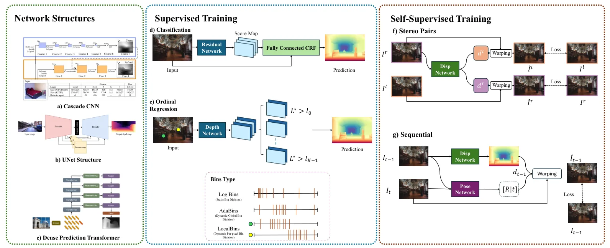
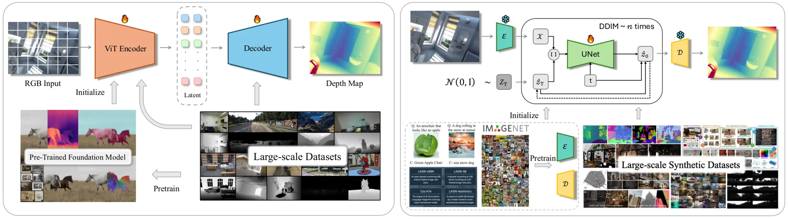
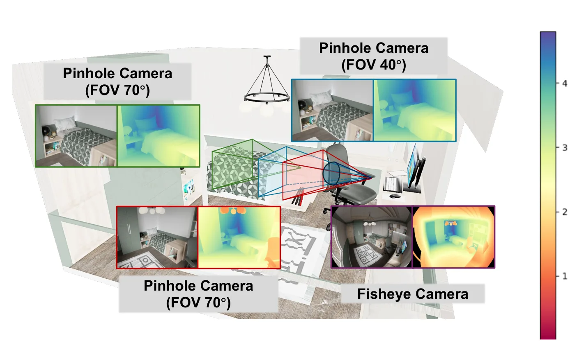
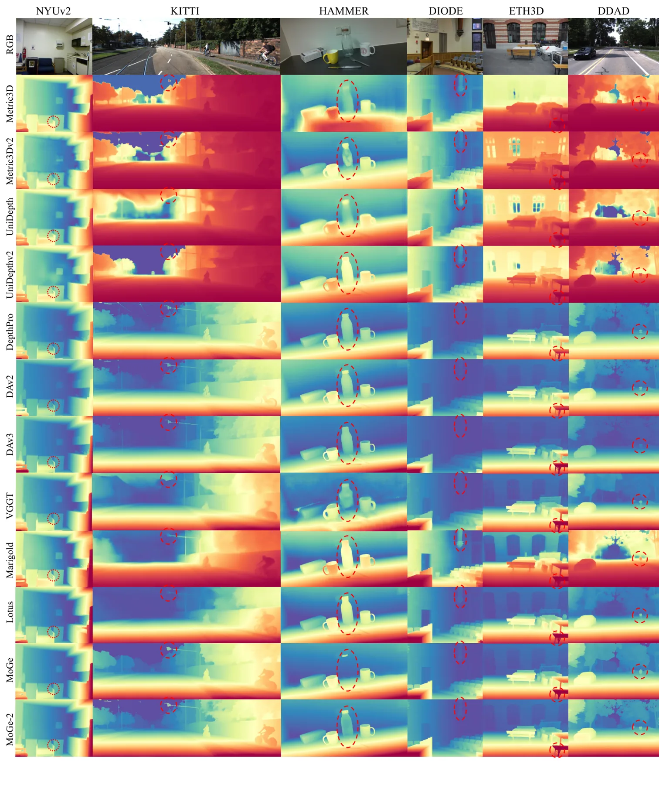
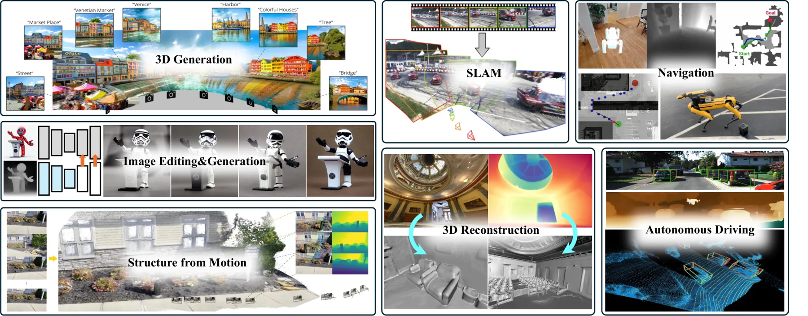
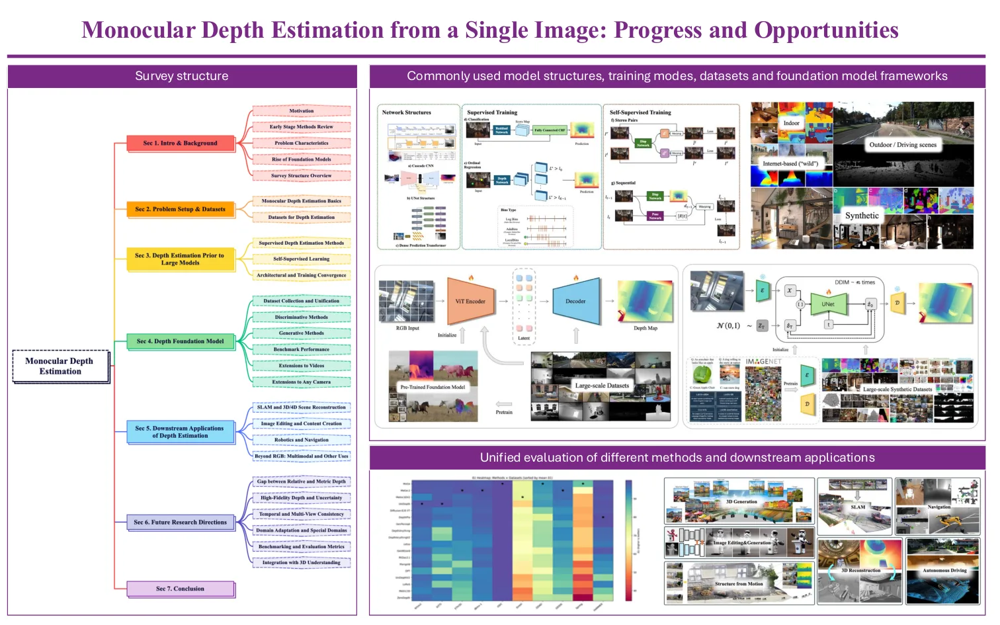

单目深度估计：进展与机会
Monocular Depth Estimation from a Single Image: Progress and Opportunities
将单目深度基础模型的规模化数据、几何归一化与下游 SLAM 需求放到同一条可评测路线中。
作者、单位与技术谱系 · Research context
作者与单位
研究脉络
作者身份采用论文 HTML 和作者简介；数字若未能在正文直接定位则标为待核验，不把引用关系解释为合作关系。
方法本质拆解 · What actually changed
训练
这是综述而非单一训练方法，归纳了大规模混合域预训练、合成数据微调、伪标签和 domain-specific fine-tuning。它把 DINOv2/DINOv3、ViT/CNN 和扩散 backbone 作为不同模型家族的训练基座，而不是声称本篇重新训练了统一模型。
约束
核心约束包括 scale-invariant/affine-invariant loss、深度—法向一致性、视频 photometric consistency，以及相机内参和 canonical camera 条件。综述的可靠性观点是必须明确约束作用在相对尺度、绝对尺度、射线方向还是跨帧状态上。
推理
不同模型在推理时可能输出 relative depth、metric depth、point-based geometry 或扩散采样结果；视频模型还需要跨帧状态建模。综述没有把这些流程统一成一个后端，因此工程上仍需单独测量校准、时延和下游 pose 优化成本。
机制
综述揭示的共同机制是用大规模多域数据学习可迁移视觉表示，再用尺度、射线和几何一致性把它们锚到物理空间。真正的失败来源往往不是单一网络，而是 domain shift、camera model mismatch、scale gauge 和评测协议不一致的组合。
输入单目图像或视频，综述比较不同训练数据与几何约束如何把相对视觉表征锚定为 metric depth，并警告推理校准和时序一致性不能省略。

动机与问题Motivation
动机与问题
单目图像本身无法唯一确定三维场景，训练域、深度范围和相机内参变化会让看似准确的模型在新环境失效。现有论文常用不同的数据集、尺度校准和指标，导致数字不能直接横向比较，因此作者建立统一评测并把深度模型与 SLAM、3D/4D 重建和机器人应用连接起来。
方法Method
方法总览
本文不是提出单一网络，而是按监督深度、自监督深度、相对/度量基础模型、扩散生成模型、视频深度和任意相机六条线组织证据。综述将模型按 discriminative 与 generative 分类，并进一步按数据统一、架构、尺度校准、几何先验和下游应用比较。
关键技术细节
文中强调 DPT 式 ViT-CNN 混合架构、scale/affine-invariant loss、表面法向一致性、DINOv2/DINOv3 表征和 Stable Diffusion 先验的作用。对 metric depth，作者特别讨论 focal length 与内参变化、canonical camera、pixel-wise scale/ray correction，以及视频模型中的跨帧一致性。

实验Experiments
实验设置
综述覆盖 synthetic、indoor、outdoor 和 depth-in-the-wild 数据，并统一分析 NYU Depth V2、KITTI、ScanNet++、TartanAir、FoundationStereo、MegaDepth 等基准。评测指标包括 Abs Rel、RMSE、δ1、scale/affine-aligned 误差及视频时序一致性；比较对象包含 Depth Anything、Depth Anything V2/V3、Metric3D、UniDepth、Depth Pro、Marigold、FoundationGeo 等代表模型。
实验数字与比较
数据规模方面，Depth Anything 使用 150 万张标注图像和 6,200 万张未标注图像，说明 data engine 对 in-the-wild 泛化的重要性；DPT 相比 CNN baseline 在多个 benchmark 上最多降低 28% relative error，数字来自正文综述。方法路线方面，FoundationGeo 被总结为同时处理 spatially varying scale drift、ray-direction bias 与 focal-length mismatch，而不是只修正一个全局尺度；完整统一 benchmark 的逐模型表格需以 HTML 表 2 和图 7 逐项核对。
消融/失败边界
综述明确指出，relative depth 与 metric depth 的优势不能用同一尺度校准协议混合比较；相机内参、视场角和深度范围变化会改变模型排序。时序上，逐帧模型会出现 flickering 和跨帧 scale inconsistency；作者还指出合成数据存在 realism gap、室内传感器有反光/透明区域缺失、互联网 SfM 标签通常缺少精确 metric accuracy。
局限与迁移Limitations & Transfer
局限与待核验
作者明确将细粒度细节、时序一致性、任意相机、几何先验和统一评测列为开放问题，且不同论文的训练数据和校准协议仍限制可比性。待核验项是正文统一 benchmark 中各模型的精确表格数字、视频长序列漂移和深度不确定性如何传递到 pose/BA；当前详情只采用 HTML 正文中可直接定位的数字。
与你研究路线的关系
可迁移框架是把“数据域—相机模型—尺度 gauge—不确定性—下游几何”作为独立实验轴，而不是把深度误差单独当作可靠性指标。下一步可在同一视觉序列上比较 relative-to-metric 校准、像素级 scale field 和显式 pose factor，报告深度不确定性与 ATE、回环和故障恢复之间的耦合。
{kind=link}

{kind=link}

{kind=link}

{kind=link}
